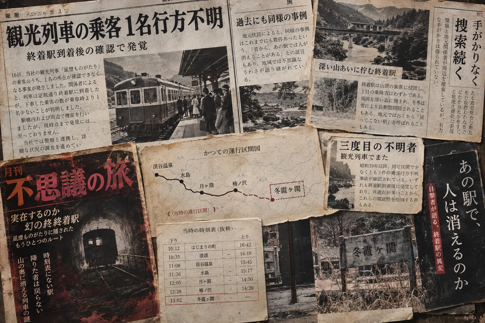

HISTORY
沿線の皆さまとともに重ねてきた、60年の旅の記録。
1964
沿線の自然と地域の魅力を伝える観光列車として運行を開始しました。
1968
より多くの観光地を巡るため運行ルートを変更しました。

1986
旅の時間をよりゆったり楽しめるよう、車内サービスを新しくしました。
2004
景色をより広く楽しめる車両へと生まれ変わりました。
2024
多くの皆さまに支えられ、運行開始から60周年を迎えました。